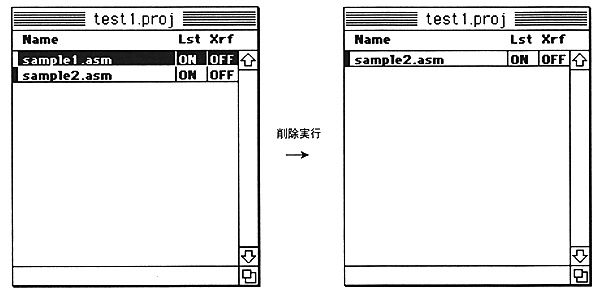
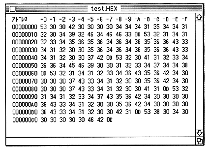

To select a file to delete, click the file name in the project with the mouse
This can be achieved. The selected file name is highlighted.
Available keys 0 to 9 The numerical value is overwritten at the cursor position. A to F The hexadecimal value is overwritten at the cursor position. delete Deletes 1 byte at the cursor position. I ↓ Insert 1 byte of 00 at the cursor position.
